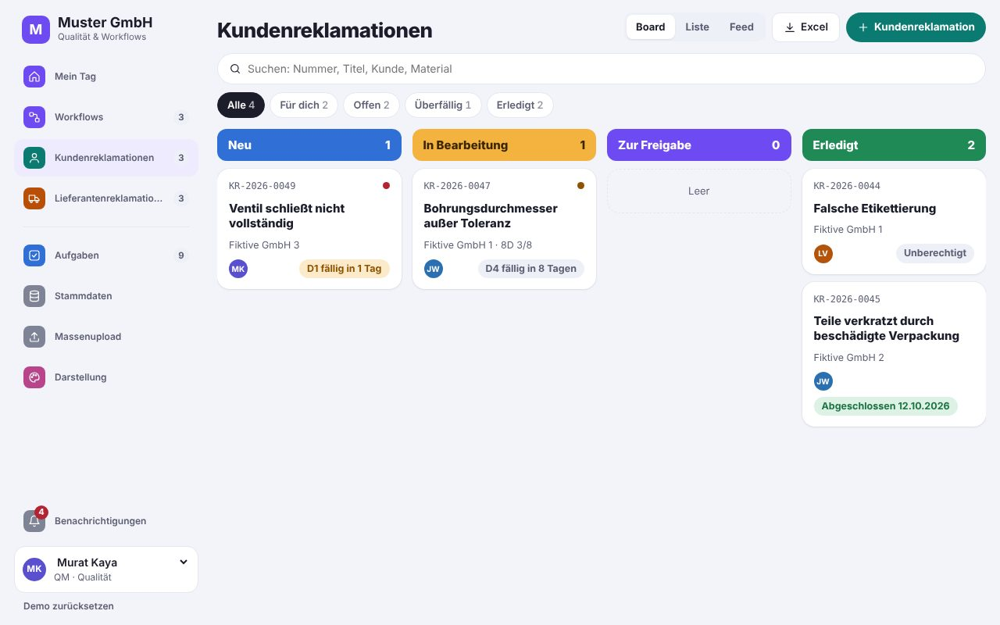
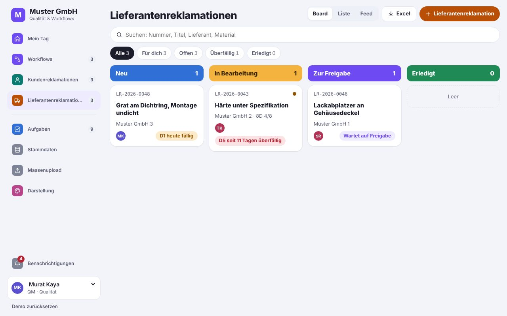
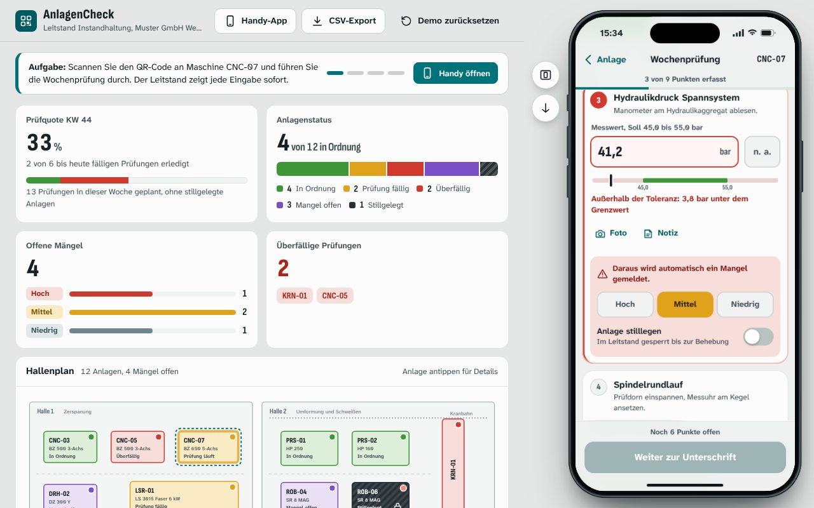

Web apps & SaaS
Custom web apps and SaaS
We build applications that fit your processes exactly, from internal tools to your own software product. They run in the browser on any device, nothing to install.
1.5 hours of work · 2 spare parts
right in the app, even offline
sent to the customer automatically
just waiting for approval
same day instead of paper and retyping
Typical tasks
What we build for you
Customer portals
Customers check orders, documents and status themselves instead of calling.
Internal tools
Replace spreadsheets and paperwork with an application with clear workflows.
Booking and request systems
Manage appointments, resources or requests online, with automatic notifications.
SaaS products
Your business idea as software with login, subscription billing and customer management.
Mobile web apps
For field service and warehouse, usable on a smartphone like an app.
Integrations
Connections to existing systems such as ERP, CRM, accounting or payment providers.
Demo to try
What this looks like in practice
Every app can be tailored. The demos are a starting point: we extend the existing apps completely and tailor them to your company. We add or remove functions, tables and fields as you need, as many as you like.

Workflow and complaints in one app
Workflow management, customer complaints and supplier complaints in one app, with shared master data, tasks and Excel bulk upload. Switch between the areas in the navigation on the left.
Open app
Workflow Management
Requests, approvals and documents move through departments digitally, with approval chains, reminders and escalation.
- Approve or reject a workflow
- Create a new workflow with an approval chain
- See open tasks per person

Customer complaints (8D)
Customer complaints handled with the 8D method, with roles, deadlines, costs and escalation through to the finished 8D report.
- Create a new customer complaint
- Work through the 8D steps
- Switch between board, list and feed

Supplier complaints
Resolve defects in purchased parts with the supplier: 8D steps, deadlines, costs and escalation, all traceable in one place.
- Create a supplier complaint
- Open the 8D report
- Switch roles, for example to head of quality

Proof of delivery with AI
Drivers photograph the delivery note, CMR or invoice on their phone. AI recognises the document type, reads customer, supplier, numbers and quantities and fills in the order and transport. Dispatch sees it instantly.
Things to try
- Photograph the sample delivery note at stop 3
- Correct uncertain fields and approve
- Go offline and send everything later

AnlagenCheck: inspections by QR code
The phone app opens right away: scan the QR code on the machine, work through the checklist with measurements and tolerances, report defects with a photo. The control room sees every entry live.
Things to try
- Scan CNC-07 and run the weekly check
- Enter a reading outside the tolerance
- Move the phone aside, watch the control room

Knowledge base with AI search
Ask instead of searching: answers from PDFs, Word files and the wiki with sources. Upload documents, keep the wiki up to date, and see where to find what and who is responsible.
Things to try
- Ask a question and open the sources
- Upload a sample PDF and ask about it
- Answer an open question as editor

Workplace safety app
Who needs which safety briefing, and what is overdue? Online briefings with quiz and signature, audits with checklists and a folder with every record the authorities ask for.
Things to try
- Open the briefing matrix
- Run through an online briefing with quiz
- Create the folder for the authorities as a PDF

GeoAuftrag: field jobs with GPS proof
Field crews report from their phone with automatic location, photo stamp and material used. The office sees who did what and where. The client monitors every site of every contractor and confirms the booked material.
Things to try
- Send a report from your phone
- Simulate a wrong location and review it under “Prüfen”
- Record a cable route on the map
- As the client, review all sites and material usage
The demos are in German.
See all demosProcess
From first call to finished solution
You see results early and decide step by step how to continue.
- 130 minutes · free
Intro call
We find the task that costs the most time and what a solution would be worth.
- 2about 1 week
Prototype
A clickable draft on its own preview address. You test it with real examples.
- 32 to 6 weeks
Build
Expansion, testing and connection to your systems such as inbox, calendar or accounting.
- 4ongoing
Operations
Hosting, updates and further development on request, for a fixed monthly fee.
FAQ
Answers up front
What is the difference between a web app and an app?
A web app runs in the browser and does not need to be installed from an app store. It works on computer, tablet and smartphone.
Can several users work with different permissions?
Yes. Login, roles and permissions are standard in everything we build.
Do we own the source code?
That depends on what you buy. With a ready-made solution you get a licence to use it and the source code stays with us. If you have custom extensions built for you, the source code of those extensions belongs to you.
How is the application run?
We handle hosting, updates and backups for a fixed monthly fee, or hand the application over to your IT.
Tell us what costs you time
In a free intro call we find out where automation or custom software pays off for you.
Request an intro call